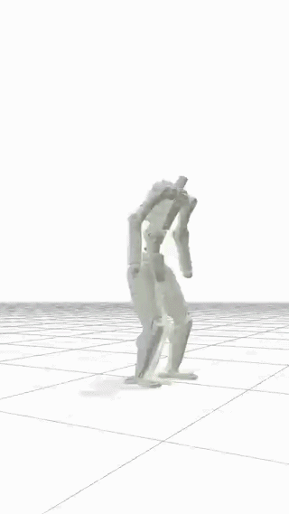
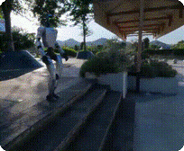
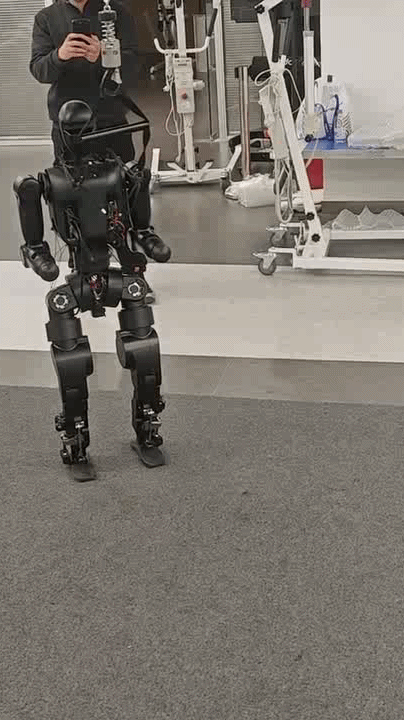
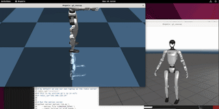
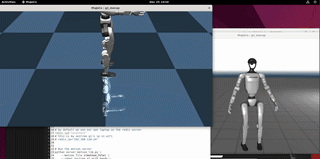
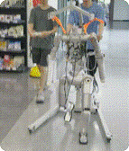
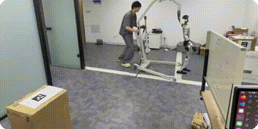

01 — CARRYBOX↗
01 — CARRYBOX↗
SIM2SIM · EMBODIED INTELLIGENCE · 2026
让机器人
学会适应世界。
我是尚钰翔，一名专注于人形机器人运动控制与强化学习的研究者。
我在仿真与现实之间，寻找更可靠的行走方式。
SCROLL TO EXPLORE ↓
RL POLICY ✦ REAL-WORLD TRANSFER ✦ HUMANOID LOCOMOTION ✦ MOTION INTELLIGENCE ✦
01 / SELECTED WORK
正在发生的研究
从一段轨迹开始，
到一个可以行走的策略。
01 — CARRYBOX↗
02 — PERCEPTION↗
03 — PARKOUR↗ 04 — MOTION↗
04 — MOTION↗
05 — TRACKING
06 — IMITATION 07 — RUN
07 — RUN08 — JUMP

09 — DEBUG
11 — CARRYBOX代码是语言，
身体是答案。
我相信真正有用的智能，应该存在于真实的物理世界里。我的工作横跨强化学习、视觉感知与机器人系统，目标是让每一次 sim2sim 都更接近 sim2real。
06YEARS IN ROBOTICS
12OPEN-SOURCE PROJECTS
∞TRAJECTORIES LEARNED
03 / START A CONVERSATION一起把下一步
hello@linmo.robot ↗